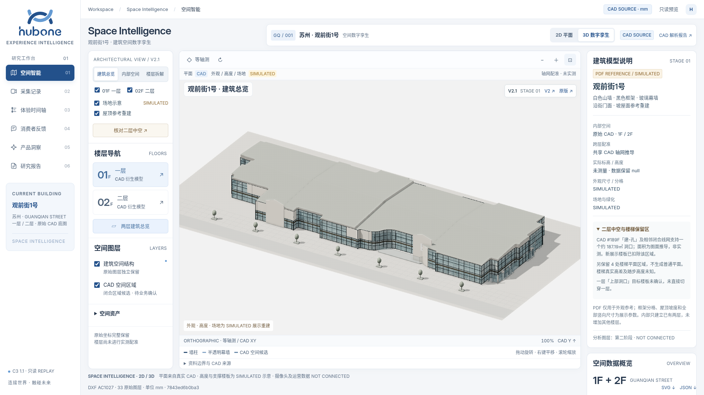
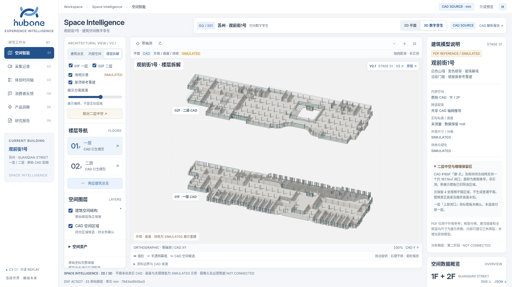
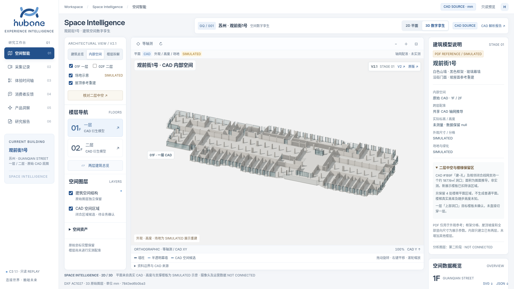
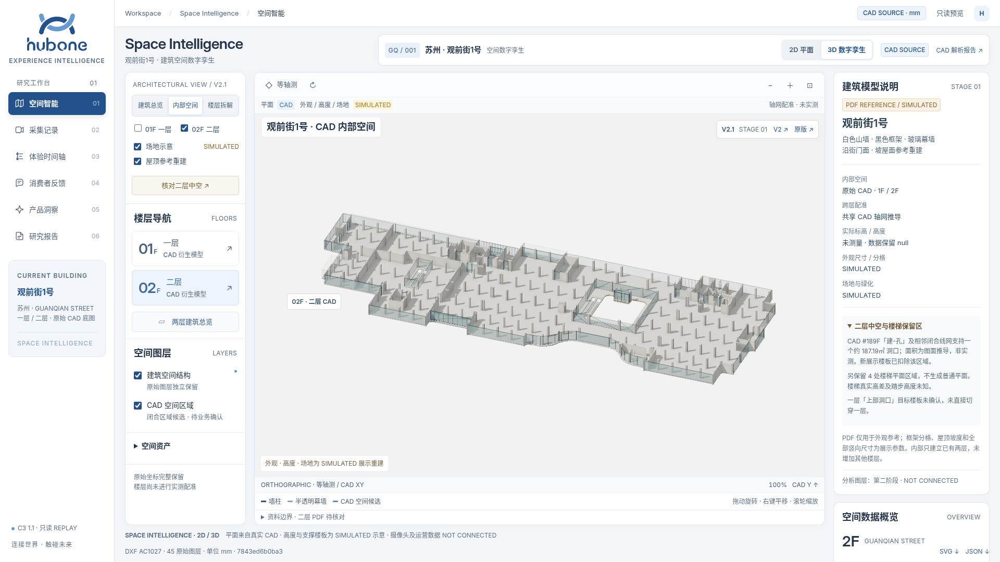
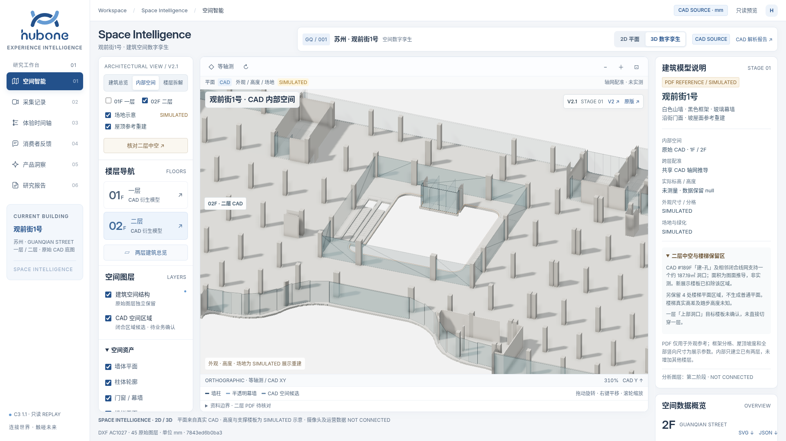
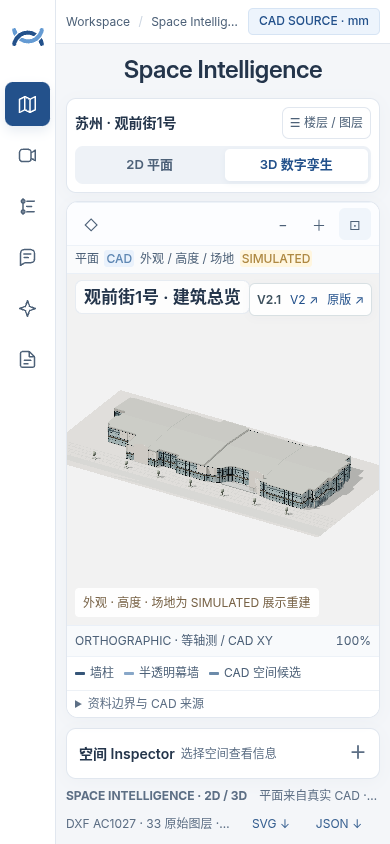

建筑外观总览与 CAD 楼层拆解
保持既有产品框架、导航和 Crest C3 1.1。外观根据用户 PDF 参考重建，内部复用原 CAD；旧版和 V2 均保留。
外立面分格、屋顶、竖向尺寸、铺装和绿化为 SIMULATED；内部仅有 CAD 已提供的 1F / 2F。二层 #189F 洞口约 187.19㎡ 为 CAD 图面推导，已从展示楼板扣除；并非实测面积或可通行性认证。第二阶段分析图层未开发。
浏览器 73 项检查通过。实际截图如下，可点击查看原图。






响应式验收
2048×972、1920×1080、1440×900、1024×768、390×844；完整结果见验收记录。
本阶段完成后等待用户验收，不自动进入第二阶段。原始 CAD、现有 API、全局样式、研究报告与证据媒体保持原样。